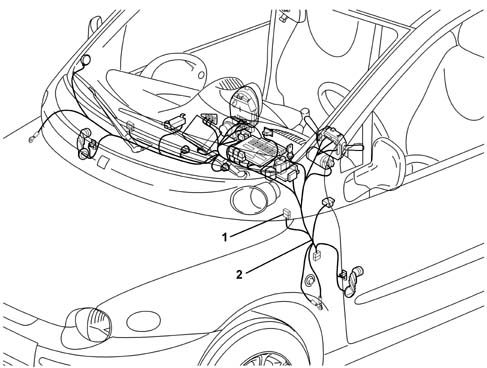

5505C30 under-facia wiring - r r
- Path
- Procedures > 55 ELECTRICAL EQUIPMENT > 5505 INSTRUMENT/GUAGE ELECTRICAL WIRING > 5505C vehicle compartment wiring > 5505C30 under-facia wiring - r r
- Kind
- repair procedure (removal / refitting; the operation number is the code)
- Applies to
- all engines; all production periods
- Interactive page
- https://sloeber94.github.io/elrnDB-fMltpl/en/#/2891878
Applies to: all engines; all production periods
Applies to: all engines; all production periods
 Removing
Removing
 Refitting
Refitting4110A11 steering wheel - r+r for replacement or check for versions with air bag
7040A26 steering column trim - r+r
5580C12 clock spring for air bag module on steering wheel r r
5550A12 complete stalk unit - r+r for versions with air bag
7040H30 front pillar trim - r r (right and left)
Move aside the carpeting and the parts necessary for removal of the integrated wiring under the instrument panel.
1. Disconnect the electrical connections and retainers for the integrated wiring under the instrument panel.
2. Remove the integrated wiring under the instrument panel.

Applies to: all engines; all production periods
Refitting
RemovingCheck that the integrated wiring under the instrument panel is not damaged and that the individual conductors are firmly attached to the connections.
Check that the connections are fitted with the anti-slip devices (secondary lock).
If necessary, check the continuity.
Reposition the integrated wiring under the instrument panel.
Connect the electrical connections and the retainers for the integrated wiring under the instrument panel.
Refit and secure the carpeting and the parts moved or removed to remove the integrated wiring under the instrument panel.
7040H30 front pillar trim - r r (right and left)
5550A12 complete stalk unit - r+r for versions with air bag
5580C12 clock spring for air bag module on steering wheel r r
7040A26 steering column trim - r+r
4110A11 steering wheel - r+r for replacement or check for versions with air bag
Check that the components involved are correctly fitted and working properly.
Topics linked from this page (7)
- 4110A11 steering wheel - r+r for replacement or check for versions with air bag
- 5550A12 complete stalk unit - r+r for versions with air bag
- 5580C AIR BAG SYSTEM
- 5580C12 clock spring for air bag module on steering wheel r r
- 5580C18 AIR BAG MODULE - R+R
- 7040A26 steering column trim - r+r
- 7040H30 front pillar trim - r r